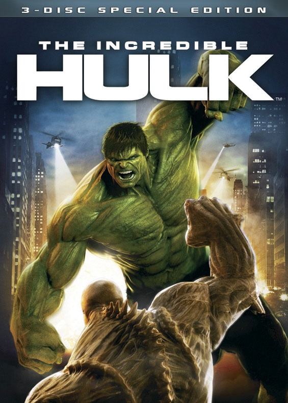

Filmes
| Filme | Descrição |
|---|---|
Homem de Ferro |
Vingadores que participaram do filme: Homem de ferro. Homem de Ferro (no original, Iron Man) é um filme americano de super-herói de 2008 baseado no personagem homônimo da Marvel Comics, produzido pela Marvel Studios e distribuído pela Paramount Pictures. É o primeiro filme do Universo Cinematográfico Marvel. O filme foi dirigido por Jon Favreau, com um roteiro escrito por Mark Fergus & Hawk Ostby e Art Marcum & Matt Holloway. É estrelado por Robert Downey Jr., Terrence Howard, Jeff Bridges, Shaun Toub e Gwyneth Paltrow. No filme, Tony Stark, um industrialista e mestre em engenharia, constrói uma armadura superpoderosa e se torna um super-herói tecnologicamente avançado, o Homem de Ferro. O filme estava em desenvolvimento desde 1990 na Universal Studios, 20th Century Fox e New Line Cinema, em diferentes momentos, antes da Marvel Studios readquirir os direitos em 2006. Marvel colocou o projeto em produção como seu primeiro filme independente, com a Paramount Pictures como sua distribuidora. Favreau assinou como diretor, visando uma sensação naturalista, e ele escolheu filmar o filme principalmente na Califórnia. As filmagens começaram em março de 2007 e terminaram em junho. Durante as filmagens, os atores estavam livres para improvisarem seus próprios diálogos porque a pré-produção estava focada na história e na ação. Versões da armadura em borracha e metal, criadas pela empresa de Stan Winston, foram misturadas com imagens geradas por computador para criar o personagem-título. Homem de Ferro estreiou em Sydney em 14 de abril de 2008, e foi lançado nos cinemas em 2 de maio de 2008. O filme foi um sucesso comercial e de crítica, arrecadando mais de US$ 585 milhões e recebendo aclamação da crítica. O desempenho de Downey como Tony Stark foi particularmente elogiado. O American Film Institute selecionou o filme como um dos dez melhores do ano. Também foi nomeado para dois Oscar de Melhor Edição de Som e os Melhores Efeitos Visuais. Duas sequências, Homem de Ferro 2 e Homem de Ferro 3, foram lançadas em 7 de maio de 2010 e 3 de maio de 2013, respectivamente. Link para resenha critica |
Homem de Ferro 2 |
Vingadores que participaram do filme: Homem de ferro. Homem de Ferro 2 (no original, Iron Man 2) é um filme americano de super-herói de 2010 baseado no personagem Homem de Ferro da Marvel Comics, produzido pela Marvel Studios e distribuído pela Paramount Pictures.1 É a sequência de Homem de Ferro, de 2008, e o terceiro filme do Universo Cinematográfico Marvel. Dirigido por Jon Favreau e escrito por Justin Theroux, o filme é estrelado por Robert Downey, Jr., Gwyneth Paltrow, Don Cheadle, Scarlett Johansson, Sam Rockwell, Mickey Rourke e Samuel L. Jackson. Após os acontecimentos de Homem de Ferro, Tony Stark está resistindo apelos do governo dos Estados Unidos para entregar a tecnologia do Homem de Ferro e ao mesmo tempo combater a sua saúde em declínio a partir do reator arc em seu peito. Enquanto isso, o desonesto cientista russo Ivan Vanko desenvolveu a mesma tecnologia e construiu suas próprias armas, a fim de prosseguir uma vingança contra a família Stark, unindo forças com rival de Stark, Justin Hammer. Após o lançamento bem sucedido de Homem de Ferro em maio de 2008, a Marvel Studios anunciou e imediatamente começou a trabalhar na produção de uma sequência. Em julho do mesmo ano Theroux foi contratado para escrever o roteiro, e Favreau assinou para voltar e dirigir. Downey, Paltrow e Jackson foram definidos para reprisarem seus papéis de Homem de Ferro, enquanto Cheadle foi trazido para substituir Terrence Howard no papel de James Rhodes. Nos primeiros meses de 2009, Rourke, Rockwell e Johansson completaram o elenco de apoio, e o filme entrou em produção naquele verão. Tal como o seu antecessor, o filme foi filmado principalmente na Califórnia, exceto por uma sequência chave no Mónaco. Homem de Ferro 2 estreou no El Capitan Theatre em 26 de abril de 2010 e foi lançado internacionalmente entre 28 de abril e 7 de maio antes de lançar nos Estados Unidos em 7 de maio de 2010. O filme recebeu críticas geralmente positivas e foi comercialmente bem sucedido, arrecando mais de US$ 623,9 milhões na bilheteria mundial. O DVD e o Blu-ray foram lançados em 28 de setembro de 2010. O terceiro filme da trilogia, Homem de Ferro 3, foi lançado em 3 de maio de 2013. Link para resenha critica |
| Homem de Ferro 3 |
Vingadores que participaram do filme: Homem de ferro. Homem de Ferro 3 (no original em inglês Iron Man 3) é um filme de ação estadunidense de 2013, produzido pela Marvel Studios e distribuído pela Walt Disney Studios Motion Pictures, baseado no personagem fictício Homem de Ferro da Marvel Comics. É a continuação de Homem de Ferro e Homem de Ferro 2, e o sétimo no Universo Marvel Cinematográfico, sendo o primeiro grande lançamento da franquia desde que o filme Os Vingadores foi lançado. Shane Black foi definido para dirigir um roteiro que ele co-escreveu junto com Drew Pearce, do qual foi baseado no arco de histórias "Extremis" escrito por Warren Ellis. Jon Favreau, que dirigiu os dois primeiros filmes da trilogia Iron Man, esta agora como produtor executivo, juntamente com Kevin Feige. Robert Downey Jr. reprisa seu papel como o personagem-título, com Gwyneth Paltrow, Don Cheadle e Jon Favreau reprisando seus papéis como Pepper Potts, James Rhodes e Happy Hogan, respectivamente. Guy Pearce, Rebecca Hall, Stephanie Szostak, James Badge Dale e Ben Kingsley completam o elenco principal do filme. Após o lançamento de Homem de Ferro 2 em maio de 2010, Favreau decidiu não voltar como diretor, e em fevereiro de 2011, Black foi contratado para reescrever e dirigir o filme. Durante abril e maio de 2012, elenco de apoio do filme foi preenchido, com Kingsley, Pearce, e Hall trouxe para retratar os papéis-chave. As filmagens começaram em 23 de maio de 2012 em Wilmington, Carolina do Norte. O filme foi filmado principalmente na Carolina do Norte, com o filmagens adicionais na Flórida, China e Los Angeles. Os efeitos visuais do filme foram tratadas por uma série de empresas, incluindo Scanline VFX, Digital Domain, e Weta Digital. Homem de Ferro 3 não foi filmado em 3D, portando em sua pós-produção o filme foi totalmente convertido, e ele foi lançado internacionalmente em 25 de abril de 2013 em IMAX. Homem de Ferro 3 foi a nona maior bilheteria da história do cinema (atualmente a décima-nona), o longa de maior sucesso de Robert Downey, Jr. como protagonista principal e o terceiro em receita publicitária da Marvel Studios com a Walt Disney Pictures. Homem de Ferro 3 é o sétimo do Universo Marvel Cinematográfico abrindo as portas, para o mais recente filme, Vingadores: Era de Ultron, filme lançado em 13 de Abril de 2015 nos Estados Unidos e 23 e 29 de Abril de 2015, no Brasil . Link para resenha critica |
The Avengers  | Vingadores que participaram do filme: Homem de ferro, Capitão América, Hulk, Thor, Viúva Negra, Gavão Arqueiro. Marvel's The Avengers (no Brasil, Os Vingadores – The Avengers ou Marvel's The Avengers: Os Vingadores; em Portugal, Os Vingadores), também conhecido como The Avengers, é um filme de super-herói estadunidense de 2012, baseado na equipe Os Vingadores, da Marvel Comics, produzido pela Marvel Studios e distribuído pela Walt Disney Studios Motion Pictures, sendo o sexto filme do Universo Cinematográfico Marvel. Escrito e dirigido por Joss Whedon, é estrelado por Robert Downey, Jr., Chris Evans, Mark Ruffalo, Chris Hemsworth, Scarlett Johansson, Jeremy Renner, Tom Hiddleston e Samuel L. Jackson. Na produção, Nick Fury, diretor da organização da paz S.H.I.E.L.D., recruta Homem de Ferro, Capitão América, Hulk e Thor para formar uma equipe que deve impedir o irmão de Thor, Loki, de subjugar a Terra. O desenvolvimento do filme começou quando a Marvel Studios recebeu um empréstimo da Merrill Lynch em abril de 2005. Após o sucesso de Homem de Ferro em maio de 2008, a Marvel anunciou que Os Vingadores seria lançado em julho de 2011. Com a assinatura de Johansson em março de 2009, o filme foi adiado para um lançamento em 2012. Whedon foi trazido para o projeto em abril de 2010 e reescreveu o roteiro original de Zak Penn. A produção começou em abril de 2011 em Albuquerque, Novo México, antes de se mudar para Cleveland, Ohio, em agosto e Nova York em setembro. O filme foi convertido em 3D na pós-produção. A pré-estreia de Os Vingadores ocorreu em 11 de abril de 2012 no El Capitan Theatre, em Hollywood, sendo lançado nos Estados Unidos em 4 de maio de 2012. No Brasil, o filme estreou em 27 de abril de 2012, com um relançamento no dia 10 de agosto de 2012. Em Portugal, a data de estreia ocorreu em 25 de abril de 2012. Com críticas geralmente favoráveis, Os Vingadores recebeu inúmeros prêmios e indicações, incluindo o Oscar e BAFTA para realizações em efeitos visuais e inúmeros recordes de bilheteria, incluindo o maior fim de semana de abertura nos Estados Unidos e Canadá em seu lançamento, encontrando-se atualmente na quarta posição com US$ 207,4 milhões. É a nona maior abertura mundial da história com US$ 392,5 milhões. Os Vingadores arrecadou mais de US$ 1,5 bilhão em todo o mundo, ocupando a terceira posição de filme de maior bilheteria durante sua turnê teatral, assim como a primeira produção da Marvel a gerar US$ 1 bilhão em vendas de ingressos e a maior bilheteria de filmes de super-heróis. Atualmente, é o sétimo filme de maior bilheteria de todos os tempos. A sequência, intitulada Avengers: Age of Ultron, estreou em 1 de maio de 2015, e mais duas sequências foram filmadas simultaneamente, sendo elas Avengers: Infinity War e Avengers: Endgame. Infinity War estreou em 27 de abril de 2018 e sua sequência, Endgame, foi lançada no dia 26 de abril de 2019. Link para resenha critica |
Capitão América: O Primeiro Vingador  | Vingadores que participaram do filme: Capitão América. Captain America: The First Avenger (no Brasil e em Portugal, Capitão América: O Primeiro Vingador) é um filme de super-herói estadunidense de 2011, baseado no personagem Capitão América, da Marvel Comics, produzido pela Marvel Studios e distribuído pela Paramount Pictures, sendo o quinto filme do Universo Cinematográfico Marvel. Dirigido por Joe Johnston e escrito por Christopher Markus e Stephen McFeely, é estrelado por Chris Evans, Tommy Lee Jones, Hugo Weaving, Hayley Atwell, Sebastian Stan, Dominic Cooper, Neal McDonough, Derek Luke e Stanley Tucci. Ambientado durante a Segunda Guerra Mundial, o filme conta a história de Steve Rogers, um homem frágil e magro do Brooklyn que alista-se no exército. No entanto, por conta de sua saúde frágil, é rejeitado. É então que aparece o Dr. Erskine, que oferece a Rogers a oportunidade de participar de um projeto experimental para criar um "super-soldado". Com a ajuda de um soro especial e de irradiações dos raios "Vita" durante o experimento, Rogers se transforma no super-soldado Capitão América para ajudar durante a guerra. Ele tem a missão de deter o Caveira Vermelha, um auxiliar de armas de Adolf Hitler e líder da Hidra, uma misteriosa organização que pretende usar um dispositivo chamado Tesseract como fonte de energia para dominar o mundo. A pré-estreia de Capitão América: O Primeiro Vingador ocorreu no El Capitan Theatre em 19 de julho de 2011. Foi lançado nos Estados Unidos em 22 de julho de 2011, chegando no dia 29 de julho de 2011 no Brasil. Estreou em Portugal no dia 4 de agosto de 2011. Para o Brasil, foi feito um pedido ao Ministério da Justiça para distribuir o filme com o selo de não recomendado para menores de 10 anos, mas o pedido foi negado e recebeu o selo 12 anos por conter violência. Recebeu críticas geralmente favoráveis, destacando-se as performances de elenco, em especial Evans, os efeitos visuais, a direção de Joe Johnston e a narrativa ambientada na Segunda Guerra Mundial, apesar de alguns apontarem falta de originalidade em seu enredo. Arrecadou mais de US$ 370 milhões mundialmente, contra um orçamento de US$ 140 milhões. A sequência, intitulada Captain America: The Winter Soldier, estreou em 4 de abril de 2014. Link para resenha critica |
| Thor: O Mundo Sombrio | Vingadores que participaram do filme: Thor. Thor: The Dark World (no Brasil, Thor: O Mundo Sombrio; em Portugal, Thor: O Mundo das Trevas) é um filme de super-herói estadunidense de 2013, baseado no herói homônimo da Marvel Comics, produzido pela Marvel Studios e distribuído pela Walt Disney Studios Motion Pictures. É continuação de Thor, de 2011 e o oitavo filme do Universo Cinematográfico Marvel. Foi dirigido por Alan Taylor, roteirizado por Christopher Yost, Christopher Markus e Stephen McFeely, e estrelado por Chris Hemsworth, Natalie Portman, Tom Hiddleston, Stellan Skarsgård, Idris Elba, Kat Dennings, Ray Stevenson, Tadanobu Asano, Jaimie Alexander, Rene Russo e Anthony Hopkins reprisando seus papéis do primeiro, com os recém-chegados Christopher Eccleston, Adewale Akinnuoye-Agbaje, Zachary Levi e Clive Russell que se juntam ao elenco. A produção de Thor: The Dark World começou em abril de 2011, quando o produtor Kevin Feige anunciou planos para uma sequência acompanhando a linha do tempo com Os Vingadores. Em julho de 2011, Kenneth Branagh, o diretor do primeiro filme, Thor, se afastou do projeto. Brian Kirk e Patty Jenkins foram considerados para dirigir o filme antes de Taylor ser contratado em janeiro de 2012. A contratação do elenco foi encerrada em agosto de 2012, com a contratação de Eccleston, Dennings e Akinnuoye-Agbaje. A filmagem principal começou em Surrey, Inglaterra, com as filmagens continuando na Islândia e em Londres, tendo sido encerradas em dezembro de 2012. Thor: The Dark World foi convertido para 3D na pós-produção. Thor: The Dark World estreou em Odeon Leicester Square em Londres, no dia 22 de outubro de 2013, com o lançamento no Brasil em 1 de novembro de 2013 e em 8 de novembro de 2013 nos Estados Unidos. Link para resenha critica |
Capitão América: Guerra Civil  | Vingadores que participaram do filme: Capitão América, Homem de Ferro, Viúva Negra, Soldado Invernal, Feiticeira Escarlate, Falcão, Pantera Negra, Gavião Arqueiro, Homem-Formiga, Homem-Aranha. Captain America: Civil War (no Brasil e em Portugal, Capitão América: Guerra Civil) é um filme estadunidense de super-herói de 2016, produzido pela Marvel Studios e distribuído pela Walt Disney Studios Motion Pictures. É a sequência de Captain America: The Winter Soldier, de 2014, sendo a terceira produção solo do personagem iniciado com Captain America: The First Avenger em 2011, além de ser o décimo terceiro filme do Universo Cinematográfico Marvel. O filme é dirigido por Anthony e Joe Russo, com roteiro de Christopher Markus e Stephen McFeely, e apresenta um elenco que inclui Chris Evans, Robert Downey Jr., Scarlett Johansson, Sebastian Stan, Anthony Mackie, Emily VanCamp, Don Cheadle, Jeremy Renner, Chadwick Boseman, Paul Bettany, Elizabeth Olsen, Paul Rudd, Tom Holland, Frank Grillo, Daniel Brühl e William Hurt. No filme, o Capitão América lidera os Vingadores e continuam a proteger o mundo, mas a equipe sofre danos colaterais. Com o aumento da pressão política que resulta na instituição de um sistema de responsabilidade e conselho governamental para determinar quando solicitar os serviços da equipe. Isto faz com que a equipe se divida — uma liderada por Steve Rogers e outra por Tony Stark. O desenvolvimento do filme começou no final de 2013, quando Markus e McFeely começaram a escrever o roteiro que possui conceitos das histórias em quadrinhos que envolve Guerra Civil (2006) escrita por Mark Millar e desenhada por Steve McNiven. Os irmãos Russo foram contratados novamente no inicio de 2014, após reações positivas nas exibições testes de Capitão América 2: O Soldado Invernal. O título do filme foi revelado em outubro de 2014 e Downey foi adicionado ao elenco, com membros adicionais aderindo o elenco meses seguintes. As filmagens principais iniciaram em abril de 2015, em Atlanta e foram concluídas em agosto de 2015, em Berlim. Capitão América: Guerra Civil realizou sua estreia mundial em Los Angeles em 12 de abril de 2016, e foi lançado nos Estados Unidos em 06 de maio de 2016, em 3D e IMAX 3D. Tornou-se um grande sucesso de bilheteria e crítica, arrecadando mais de US$ 1,1 bilhão mundialmente, conquistando a maior bilheteria de 2016 e ocupando a 15ª posição de filme de maior bilheteria de todos os tempos. É o quarto título do Universo Cinematográfico Marvel a ultrapassar a marca do bilhão, depois de Marvel's The Avengers, Iron Man 3 e Avengers: Age of Ultron. Link para resenha critica |
Vingadores: Era de Ultron  | Vingadores que participaram do filme: Homem de Ferro, Thor, Hulk, Capitão América, Viúva Negra, Gavião Arqueiro, Feiticeira Escarlate. Avengers: Age of Ultron(no Brasil, Vingadores: Era de Ultron; em Portugal, Vingadores: A Era de Ultron) é um filme de super-herói estadunidense de 2015, baseado na equipe Os Vingadores, da Marvel Comics, produzido pela Marvel Studios e distribuído pela Walt Disney Studios Motion Pictures, sendo a sequência de Marvel's The Avengers, de 2012, e o décimo primeiro filme do Universo Cinematográfico Marvel. Escrito e dirigido por Joss Whedon, é estrelado por Robert Downey Jr., Chris Hemsworth, Mark Ruffalo, Chris Evans, Scarlett Johansson, Jeremy Renner, Don Cheadle, Aaron Taylor-Johnson, Elizabeth Olsen, Paul Bettany, Cobie Smulders, Anthony Mackie, Hayley Atwell, Idris Elba, Stellan Skarsgård, James Spader, Linda Cardellini, Thomas Kretschmann, Claudia Kim, Andy Serkis e Samuel L. Jackson. A sequência da união dos heróis da Marvel foi anunciada em maio de 2012, após o lançamento muito bem sucedido do primeiro filme. Whedon está de volta ao projeto e em agosto de 2012, a data de lançamento foi definida. Em dezembro, Whedon havia completado o primeiro esboço do roteiro. A escolha do elenco começou em junho de 2013 com a renovação do contrato de Downey para mais dois filmes da saga. A pré-estreia de Avengers: Age of Ultron ocorreu no dia 13 de abril de 2015 no Dolby Theatre, em Hollywood. Foi lançado no Brasil em 23 de abril de 2015, chegando em Portugal no dia 29 de abril de 2015. Estreou nos Estados Unidos em 1 de maio de 2015 nos formatos convencional, 3D e IMAX 3D. Recebeu críticas geralmente favoráveis, destacando-se as performances do elenco e as sequências de ação, apesar de alguns críticos apontarem que não tenha o mesmo charme e leveza do filme anterior. Com um orçamento estimado em US$ 365,5 milhões, é a segunda produção mais cara da história do cinema após Pirates of the Caribbean: On Stranger Tides. Tornou-se um grande sucesso financeiro, arrecadando mais de US$ 1,4 bilhão mundialmente, contra um orçamento de US$ 250 milhões, sendo a quarta maior bilheteria de 2015 atrás apenas de Star Wars: The Force Awakens, Jurassic World e Furious 7. Na receita doméstica, Estados Unidos e Canadá, atingiu US$ 459 milhões, ocupando a terceira posição no ano. Detém o título de sétima maior abertura da história no mercado interno com US$ 191,3 milhões, enquanto mantém a décima primeira colocação na abertura mundial com US$ 392,5 milhões em seu primeiro fim de semana. Avengers: Age of Ultron é o quarto filme do Universo Cinematográfico Marvel a atingir a marca do bilhão ao lado de Marvel's The Avengers, Iron Man 3 e Captain America: The Winter Soldier, sendo a terceira produção de maior êxito na bilheteria doméstica e a segunda na mundial da franquia. Atualmente, é a nona maior bilheteria da história do cinema. Duas sequências, filmadas simultaneamente, intituladas Avengers: Infinity War e Avengers: Endgame, estrearam em 27 de abril de 2018 e 26 de abril de 2019, respectivamente. Link para resenha critica |
Vingadores: Ultimato  | Vingadores que participaram do filme: Homem de Ferro, Thor, Hulk, Capitão América, Viúva Negra, Gavião Arqueiro, Capitã Marvel. Avengers: Endgame (no Brasil, Vingadores: Ultimato; em Portugal, Vingadores: Endgame) é um filme de super-herói estadunidense de 2019, baseado na equipe Os Vingadores da Marvel Comics, produzido pela Marvel Studios e distribuído pela Walt Disney Studios Motion Pictures, sendo a sequência de The Avengers, de 2012, Avengers: Age of Ultron, de 2015, e Avengers: Infinity War, de 2018, e o vigésimo segundo filme do Universo Cinematográfico Marvel. Dirigido por Anthony e Joe Russo e escrito por Christopher Markus e Stephen McFelly, o filme apresenta um ensemble cast que inclui Robert Downey Jr., Chris Evans, Mark Ruffalo, Chris Hemsworth, Scarlett Johansson, Jeremy Renner, Don Cheadle, Paul Rudd, Brie Larson, Karen Gillan, Danai Gurira, Bradley Cooper e Josh Brolin. No filme, os membros sobreviventes dos Vingadores e seus aliados trabalham para reverter os danos causados por Thanos em Infinity War. O filme inicialmente foi anunciado como Avengers: Infinity War – Part 2. Os irmãos Russo foram contratados para dirigir em abril de 2015 e em maio, Markus e McFeely assinaram para escrever o roteiro do filme. Em julho de 2016, a Marvel removeu o título do filme, o chamando apenas de Avengers 4. As filmagens começaram em agosto de 2017, no Pinewood Atlanta Studios, no Condado de Fayette, no estado americano da Geórgia, sendo filmado simultaneamente com Avengers: Infinity War. As filmagens adicionais ocorreram no centro e no metrô de Atlanta na cidade de Nova Iorque. No dia 7 de dezembro de 2018, durante a CCXP, foi divulgado o primeiro trailer do filme com o seu título oficial. Com um orçamento estimado de US$ 356 milhões, é o terceiro filme mais caro da história. Avengers: Endgame foi amplamente aguardado, com a Disney apoiando o filme com extensas campanhas de marketing. Ele estreou em Los Angeles em 22 de abril de 2019, e nos Estados Unidos em 26 de abril de 2019, nos formatos IMAX e 3D. No Brasil e em Portugal, a estreia foi realizada no dia 25 de abril de 2019. Foi altamente bem recebido pela crítica, com elogios direcionados para sua direção, atuação, trilha sonora, efeitos visuais, valor de entretenimento e peso emocional, com muitos louvando seu ponto culminante da história de vinte e dois filmes. Também quebrou vários recordes de bilheteria e arrecadou mais de US$ 2,7 bilhões em todo o mundo, tornando-se o filme de maior bilheteria de 2019. Foi o filme mais rápido da história a chegar a US$ 1 bilhão em receita, alcançando a marca em apenas 5 dias, além de ser também o mais rápido a atingir US$ 2 bilhões em 11 dias. Detém a maior abertura doméstica de todos os tempos, com US$ 1,2 bilhão mundialmente em seu primeiro final de semana em cartaz, superando o seu título antecessor, Avengers: Infinity War, que arrecadou US$ 640,5 milhões em 2018. Após treze semanas em exibição, Endgame tornou-se o filme de maior bilheteria de todos os tempos, recorde anteriormente estabelecido por Avatar. Link para resenha critica |
| O Incrível Hulk  | Vingadores que participaram do filme: Hulk. The Incredible Hulk (no Brasil e em Portugal, O Incrível Hulk) é um filme americano de super-herói de 2008 baseado no personagem Hulk da Marvel Comics, produzido pela Marvel Studios e distribuído pela Universal Pictures. É o segundo filme do Universo Cinematográfico Marvel. O filme foi dirigido por Louis Leterrier, com um roteiro de Zak Penn. É estrelado por Edward Norton, Liv Tyler, Tim Roth, William Hurt, Tim Blake Nelson e Ty Burrell. No filme, Bruce Banner se tornou o Hulk como um peão involuntário em um esquema militar para revigorar o programa supersoldado através da radiação gama. Em fuga, ele tenta se curar do Hulk antes de ser capturado pelo general Thaddeus Ross, mas seus piores medos são percebidos quando o soldado Emil Blonsky se torna uma criatura similar, mas mais bestial. O desenvolvimento do filme começou em 2006. Leterrier, que havia manifestado interesse em dirigir Homem de Ferro, foi trazido para dirigir e Penn começou a trabalhar em um roteiro que seria muito mais próximo dos quadrinhos e da série de televisão de 1978. Em abril de 2007, Norton foi contratado para interpretar Banner e para reescrever o roteiro de Penn, a fim de se distanciar do filme de 2003, Hulk, de Ang Lee, e estabelecer a sua própria identidade como um reboot, embora ele não foi creditado pela sua escrita. As filmagens aconteceram principalmente em Toronto, Ontário, além de filmagens em Nova Iorque e no Rio de Janeiro, de julho a novembro de 2007. Mais de 700 efeitos visuais tiros foram criados em pós-produção usando uma combinação de captura de movimento e imagens geradas por computador para completar o filme O Incrível Hulk estreou em 8 de junho de 2008, no Anfiteatro Gibson em Universal City, na Califórnia, e foi lançado nos cinemas em 13 de junho de 2008, recebendo críticas geralmente favoráveis pelos críticos após o lançamento. Elogios dos críticos foram principalmente para as sequências de ação e a representação da personagem principal. O filme arrecadou mais de US$ 263 milhões em todo o mundo. Norton foi definido para reprisar o papel de Banner em Marvel's The Avengers e qualquer outro filme do UCM com o personagem, mas ele foi substituído por Mark Ruffalo, que assinou um contrato para interpretar o personagem em todas as possíveis Link para resenha critica |